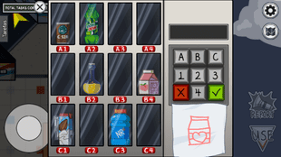
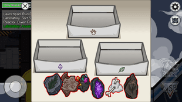
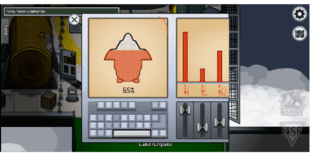
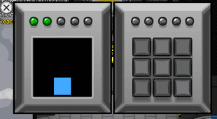

Task Tester 2000 - Mira HQ
Admin
Balcony
Cafeteria
Communications
Greenhouse
Hallway
Laboratory
Launchpad
Medbay
Office
Reactor
Storage
Admin
Short Task
Prime Shields
From the console at the bottom of the room, click and choose all of the red shapes.
Chart Course

Go to the controls at the right corner of the room, and drag the ship along the dotted course.
Divert Power

the player needs to travel to admin to accept diverted power.
Common Task
Enter ID Code
Select the table as soon as you enter to bring up the code entry. Select the card from your wallet and enter the code printed on it into the key pad.
Balcony
Short Task
Clear Asteroids

At the console to the left of the balcony, click to activate the asteroids then keep shooting until you’ve cleared 20
Measure Weather
This time, go the right of the balcony. Click the switch, then activate the terminal and wait for it to finish measuring.
Cafeteria
Short Task
Divert Power
The player needs to travel to the cafeteria to accept diverted power.
Empty Garbage

Head to the lever on the wall and hold it down until the screen is empty.
Buy Beverage
Click the vending machine at the back of the room. There will be a scribbled drawing of the beverage to buy; find it and input the right code.
Communications
Short Task
Divert Power
The player needs to travel to communications to accept diverted power
Greenhouse
Short
Divert Power
Crewmate most upload data which takes about 8.7 seconds to do.
Clean O2 Filter
n this task, the player must drag the six leaves to the trash to complete the task
Common Task
Fix Wiring

Fix Wiring is done by connecting each colored wire from the left-hand side of the screen to the right-hand side, making sure each color matches on both sides.
Long Task
Water Plants
The task involves retrieving a watering can from Storage and using it to water the plants in Greenhouse.
Hallway
Common Task
Fix Wiring
This is a three part task which starts outside the Locker Room. Click the panel then line up the wires across either side by matching the colors. After this, you’ll need to head to the Greenhouse and to the Reactor to finish the task.
Laboratory
Short Task
Sort Samples
TAt the bottom table, there are three boxes. You’ll need to put shiny geodes in the gem box, animal fossils in the paw print box, and plant fossils in the leaf box. There’s usually two of each.
Assemble Artifact
This happens on the table at the top of the room. You’ll need to arrange the pieces of crystal into a jigsaw to finish the tasks.
Divert Power
The crewmate most go to laboratory to divert power.
Common Task
Fix Wiring
Fix Wiring is done by connecting each colored wire from the left-hand side of the screen to the right-hand side, making sure each color matches on both sides. Three electrical panels must be repaired for this task to be completed.
Launchpad
Short Task
Fuel Engines

CClick the terminal on the left until the gas canister comes up. Hold down the bottom button until the engine is full.
Run Diagnostics
Use the console on the left and begin the task. It will take a long time, almost a minute, for this to go through. You can leave the terminal and come back, but the task will not register as complete until you select it one final time to choose the anomaly.
Long Task
Divert Power
The crewmate most go to launchpad to accept diverted power.
Medbay
Short Task
Divert Power
The crewmate most go to medbay to accept diverted power.
Long Task
Submit Scan

Stand on the central platform and begin the task. You must remain still during the scan for it to work.
Office
Short Task
Divert Power
The player needs to travel to office to accept diverted powe
Process Data
Select the computer at the back of the room, then wait while the data uploads itself.
Reactor
Short Task
Unlock Manifolds

Click the keypad on the left of the room, then tap the numbers 1-10 in sequence.
Divert Power
The crewmmate must go to reactor to accept diverted power.
Long Task
Start Reactor
Go up to the actual reactor in the middle of the room. Once clicked, it’s a simple case of following the sequence of flashes until you’ve done this five times.
Storage
Common Task
Fix Wiring
Fix Wiring is done by connecting each colored wire from the left-hand side of the screen to the right-hand side, making sure each color matches on both sides. Three electrical panels must be repaired for this task to be completed.
Common Task
Water Plants
First, you need to select the watering can at the back of the room. This will bring up a new screen, where you’ll need to, um, click the watering can again. After this, head to the Greenhouse and click the plants on the right to finish the task.